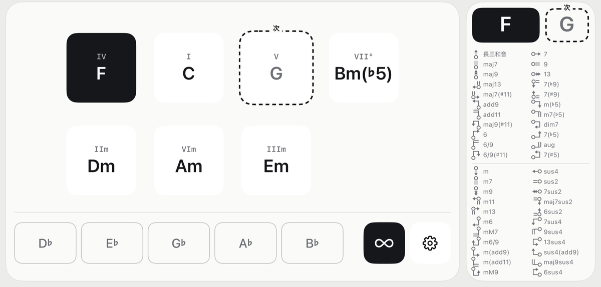
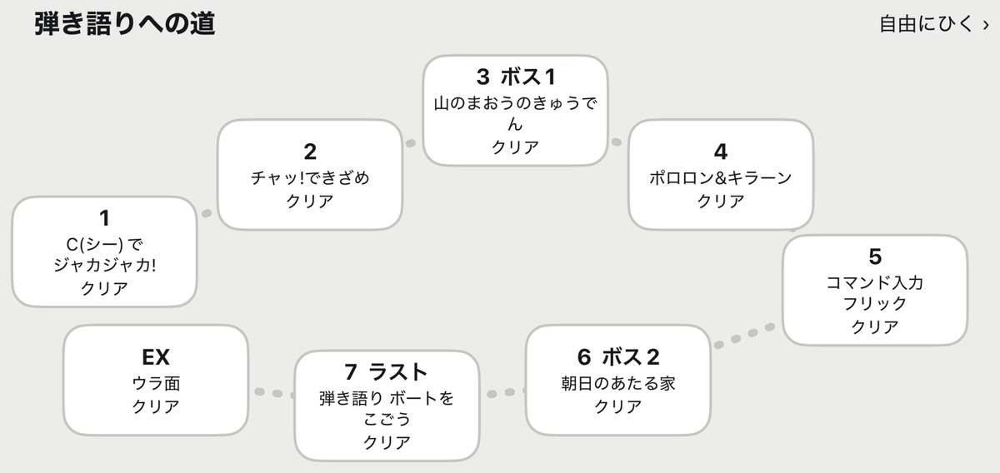

憧れのあの歌を、弾き語れ。
flickchord（フリックコード）は、iPhone で弾く和音のアプリです。

ギターで弾いてみたかったあの曲を、iPhoneで。左手でパッドを押さえて、右手でプレートをシュッと払えば、もう伴奏。コード譜を見ながら、そのまま弾けます。
アプリの中のガイド「弾き語りへの道」に沿って、1つずつ技を磨けます。最後は、歌いながら弾く弾き語りに挑戦します。

Bluetooth のイヤホンやスピーカーでは音が 0.1〜0.3 秒おくれて聞こえるので、リズムに合わせて弾くのはほとんどできません。iPhone のスピーカーか、有線のイヤホンで弾いてください。
動く環境
- iPhone（iOS 17 以上）、横向きで使います
- 日本語・英語
サポート
困ったときはよくある質問をご覧ください。解決しないときは、ebm7dm7cm7bbf@icloud.com までメールでお知らせください。
flickchord は個人で開発・運営しています。お問い合わせへのお返事には数日から 1 週間ほどかかることがあり、すべてにはお答えできない場合もあります。ご了承ください。